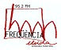

|
Producció
Generalitat de Catalunya
Departament d'Ensenyament
Servei d'Ensenyament del Català
i Àrea de Tecnologies de la Informació i les Comunicacions
Coordinació i disseny
d'activitats
Josep Pi i Mallarach
Programa JClic
Francesc Busquets i Burguera
Desenvolupament de les
activitats
Maria Areny i Busquets
Lluïsa Bruch i Salada
Josep Pi i Mallarach
Montserrat Torra i Puigdellívol
Versió algueresa
Luca Scala
Assessorament
lingüístic català nord-occidental
Imma Creus i Bellet
Joan Julià i Munné
Disseny gràfic,
animació i dibuixos
GANG, estudi multidisciplinari
Veus català central
Neus Sendra i Gubianes
Carles Martínez i Davó
Enregistraments sonors del curs audiovisual Digui Digui.
Veus
català nord-occidental
Oriol Bosch i Muntañés
Enric Brascó i Baiges
Gisela Gardeñes i Forns
Enric Pinyol i Leal
Romina Rodríguez i Bañeres
Cristina Rodríguez i Orgaz
Veus
versió algueresa
Aldo Dore
Maria Antonieta Martínez
Anna Scala
Luca Scala
Veus versió occitana
Montserrat Pedarrós Delaurens
Postproducció de
so
Joan Domènec Andrés i Magallón
Francesc Solsona i Roca
Jordi Cosó Vallès

L'enregistrament de la versió nord-occidental ha tingut la
col·laboració de l'emissora de ràdio Freqüència
Lleida, que ha cedit els seus estudis i suport tècnic.
Referències
Part de les activitats són adaptació del
curs audiovisual Digui Digui i han estat reproduïdes amb
l'autorització corresponent.
La majoria de les activitats incloses en el GALÍ
són de creació específica per al projecte,
però unes poques han estat adaptades de les fitxes dels Centres
d’autoaprenentatge de llengua catalana, extretes dels següents
llibres de text i de consulta que es poden trobar al mercat:
- Badia, D. i altres (1985). Llibreta autocorrectiva de vocabulari.
Vic:
Eumo Editorial
- Fargas, A. i altres (1979-91). Llibretes d’exercicis
autocorrectius (1-5). Vic: Eumo Editorial
- Mas, M. i altres (1984). Digui Digui. Barcelona:
Publicacions de l’Abadia de Montserrat i Enciclopèdia Catalana
Amb el suport de la
Comissió Europea
La informació continguda en
aquesta publicació no reflecteix
necessàriament la posició o l'opinió de la
Comissió Europea.
|